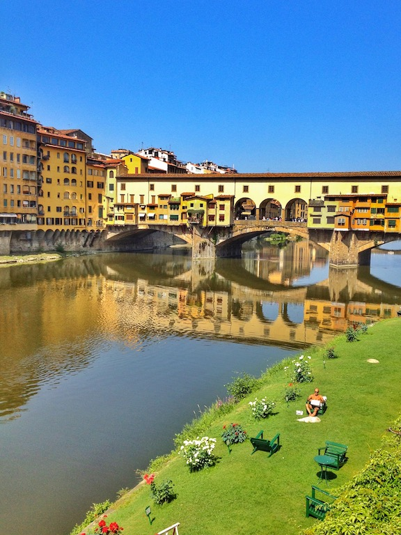

Photo by Francesca Tosolini
People often ask when is the best time to go to Italy. I feel the best time is from April to June and from September to October. July and August are less appealing due to extreme heat and more crowds. August is the month when most Italians go on vacation, and, as a result, many tourist areas are extremely crowded but cities are emptier which makes them easier to visit. The drawback is that many nice stores and restaurants may be closed. {This is an excerpt from chapter 15 “Miscellaneous information” of the eBook “Italy from the Inside. A native Italian reveals the secrets of traveling in Italy”}